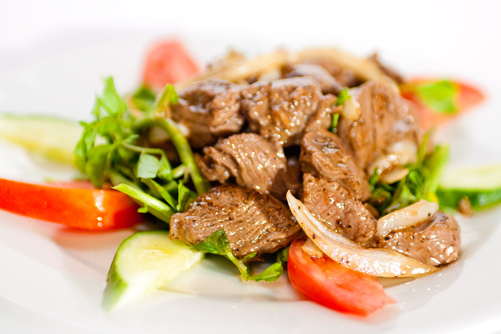

Culture
Traditional food
-
Amok : fish or chicken cooked with coconut's milk and a mix of spices in a banana leaf.

Photo of Amok
- Lok lak : marinated beef with citrus and pepper,
served with a fried egg and a lot of onion.

Photo du Lok lak
- Samla Chapek : pork soup or its variant with fish the Somla machou banle
The Cambodian language
The khmer language has a lot of similitude with others asian language, even if (à l'inverse du chinois) it is not a tonal language.
A few important khmer words :
- Hello :
-“Tchumbriepsour” ; polite way
-“Souasday” ; common way - Please: “Sohm”
- Bye: “Lia sunh hao-y”
- See you soon : “Juab kh'nia th'ngay krao-y”
- Thank you : “Aw kohn”
Usages
Respecting the culture of the foreign country is essential in order to be integrated in the country. To not make ennemies in Cambodia, here are some things to know:
Greet a Cambodian
- To greet a Cambodian, it is advisable to join the hands in front of the chest and to bend looking at the person in the eyes. We do not kiss and we rarely use the hand. The deeper the inclination is, the higher the hands, the greater the respect.
- Always call someone by his name preceded by Lokasrei ("Lady") or Boros ("Sir"). Calling him directly by his name is rude.
Generally (in the street, at the restaurant ...)
- The Cambodian are modests. Be sure to wear a decent nad neat outfit on any occasion.
- Do not point anyone with fingers.
- Do not touch the head of a Cambodian, adult or child (it is sacred because considered as the seat of the soul).
- Be discreet and avoid showing your feelings in public.
- Ask the person concerned for permission before taking a picture.
- The left hand is considered impure. If you have to stretch an object, use your right hand.
If you visit a Cambodian
- Take off your shoes if you are staying at home or if asked or suggested. A stack of shoes at the entrance is usually a good indicator.
- If during a visit, a Cambodian offers something (tea, fruit ...), take it with pleasure. Refusing it would be perceived as an offense. Similarly, it is impolite to finish your plate because it meant that the amount was insufficient. It is advisable to leave a small portion.
- As in the West, a small thank you gift is very much appreciated. Be sure to give it with your right hand (the left is considered impure).
During a conversation
- Don't talk loud. Be discreet
- Do not get upset: losing your temper is frowned upon as in other Asian countries. Be sure to express yourself with a smile and with humor, even if you do not agree with your interlocutor.
- Do not criticize royalty and avoid talking politics with locals. By tradition or fear of reprisals, these subjects are taboo. You would put your interviewee uncomfortable.
To visit temples
- Be properly dressed: cover your shoulders to the knees, whether you are a man or a woman.
- Bend the Buddha to the left, counterclockwise. Do not sit back to him and do not point your feet in his direction.
- Women should not touch, or even touch, a monk. A man can, but it is better to avoid it.
- It is customary to leave an offering for the monks in the pagodas you visit.
- If you attend a ceremony, be sure to be a little lower than the officiant. The contrary would be perceived as a great lack of respect.